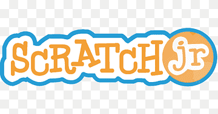
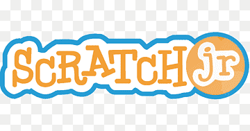
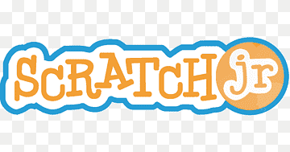

Herramientas TIC
Estas son algunas de las herramientas usadas para crear los recursos del OVA:
 

Este Objeto Virtual de Aprendizaje está diseñado para que los niños aprendan de forma divertida sobre los animales de la granja utilizando herramientas TIC.
Es un recurso educativo digital con actividades interactivas que facilita el aprendizaje de los niños sobre los animales de la granja, promoviendo la exploración y el aprendizaje significativo a través de imágenes, sonidos y dinámicas sencillas.
Interactúa con el contenido dando clic dentro del OVA:
Si el OVA no carga, verifica tu conexión a internet o abre el enlace en una pestaña nueva.
Imágenes ilustrativas de los animales de la granja:
Estas son algunas de las herramientas usadas para crear los recursos del OVA:
